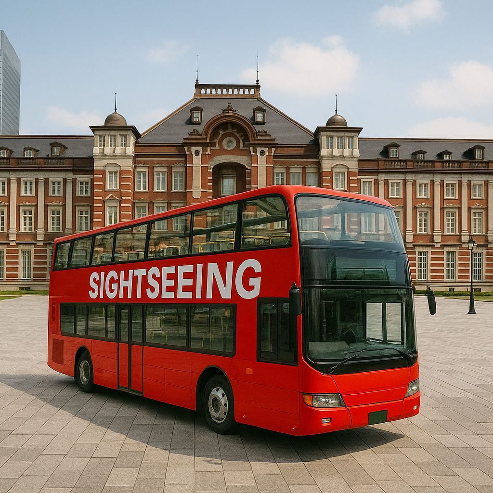

Japan Sightseeing Bus – Explore Japan with Comfort and Convenience
Japan’s sightseeing buses offer one of the most comfortable and comprehensive ways to explore major cities like Tokyo, Kyoto, and Osaka. With convenient routes, professional guides, and multilingual support, they are ideal for first-time visitors and seasoned travelers alike.
Comfortable City Exploration with Scenic Routes
These buses follow carefully designed routes that pass through top landmarks and cultural sites, allowing you to relax while enjoying panoramic views from your seat. Choose between open-top double-decker buses, hop-on-hop-off services, or guided luxury coach tours across Japan’s most iconic cities.
Multilingual Guides and Live Commentary
Most sightseeing buses feature live or recorded audio guides available in English, Chinese, Korean, and more. Knowledgeable guides onboard provide historical context, local anecdotes, and insider tips to make your trip more enriching and entertaining.
Popular Routes and Destinations
Popular sightseeing bus tours include Tokyo’s Asakusa–Shibuya loop, Kyoto’s temple circuit covering Kiyomizu-dera and Fushimi Inari, and scenic coastal drives near Mount Fuji. Each tour is curated to cover both iconic attractions and hidden local gems.
Booking and Accessibility
Booking a seat is easy via official websites or through hotel concierges. Many buses offer wheelchair access, air conditioning, free Wi-Fi, and convenient boarding points near train stations. It's a stress-free way to explore Japan without the need to navigate complex train systems.
Why Choose a Sightseeing Bus?
Whether you're looking for a relaxed way to see the sights or hoping to get a narrated overview of a city’s highlights, sightseeing buses combine comfort, education, and accessibility. It’s one of the best introductory ways to experience Japan’s cities.
Visitor Information
- 🌸 Main Cities: Tokyo, Kyoto, Osaka, Hiroshima, Fukuoka
- 🌸 Operating Hours: 9:00 AM – 6:00 PM (varies by city and route)
- 🌸 Tickets: ¥1,500–¥4,000 depending on route and duration
- 🌸 Access Points: Major train stations and tourist areas
Tags: sightseeing bus Japan, Tokyo bus tour, Kyoto sightseeing, Japan travel, hop-on hop-off Japan, guided city tour, comfortable Japan transit
Planning to take a sightseeing bus in Japan?
To get the most immersive and insightful experience, we recommend booking a certified local private guide from our team. All our guides are licensed professionals officially recognized by the Japanese government, offering personalized tours tailored to your interests. Please contact your selected guide in advance to confirm availability and get expert assistance for your trip.